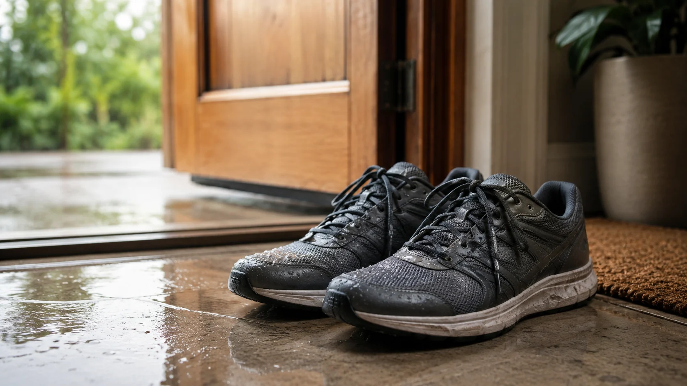
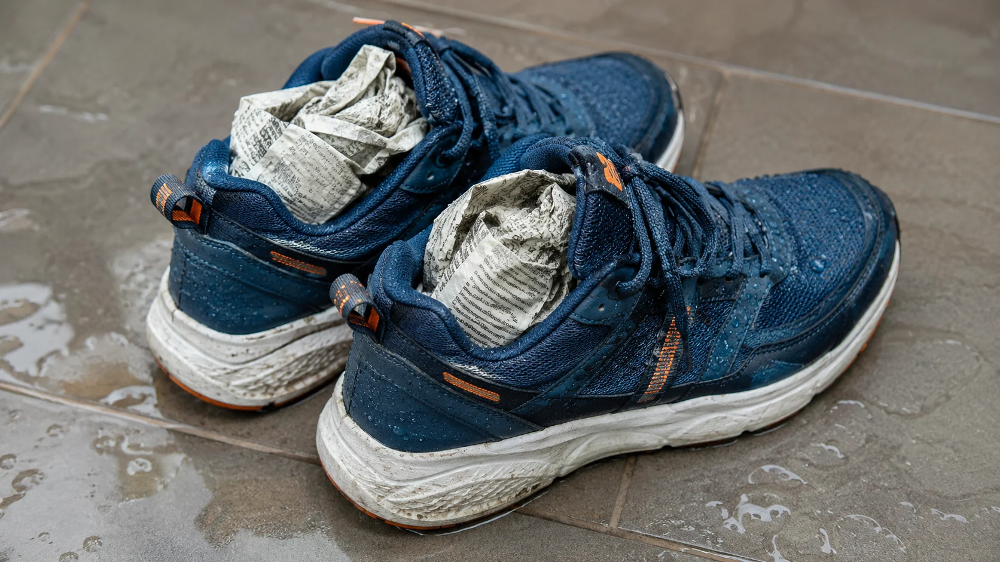
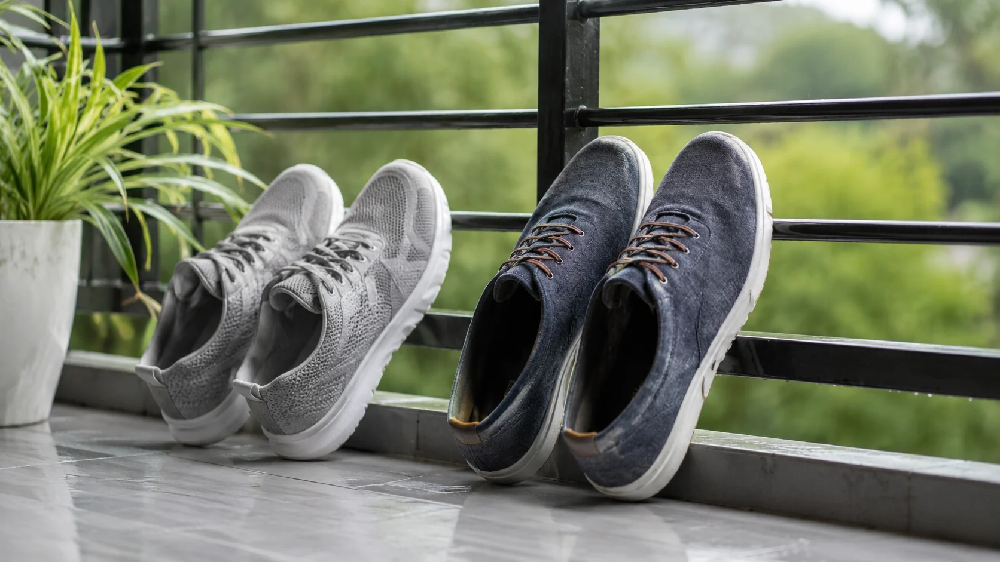
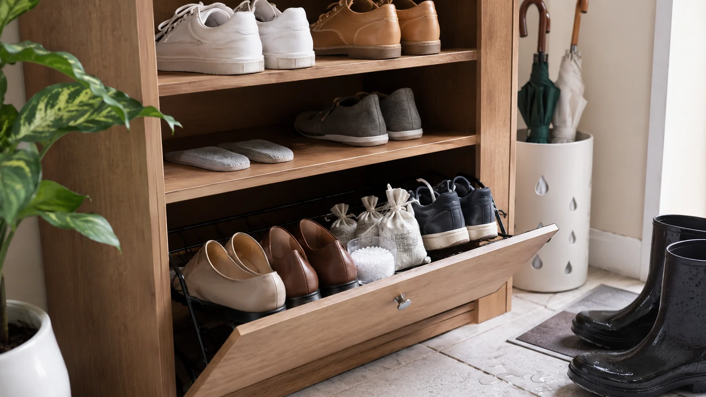
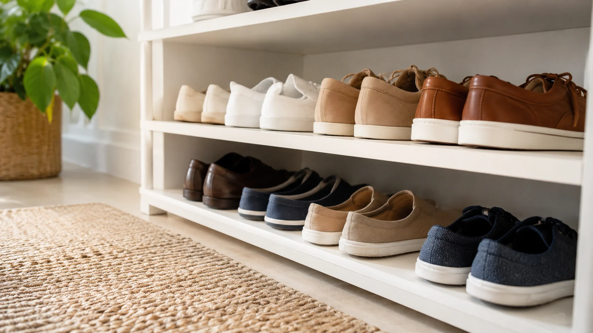

장마철 신발 냄새, 발 문제가 아니라 말리는 방식이 문제일 수 있습니다
비 오는 날 신발 냄새가 심해지는 이유와 젖은 운동화 말리기, 제습, 발냄새 관리법을 자연스럽게 풀어낸 글입니다.

비 맞은 신발을 그냥 두면 다음 날 냄새가 갑자기 올라옵니다
장마철만 되면 현관 냄새 때문에 스트레스받는 집이 많습니다. 누군가는 발냄새 때문이라고 말하고, 누군가는 신발장이 문제라고 하면서 의견이 갈립니다.
저도 예전에는 장마철 신발 냄새가 나면 발을 더 자주 씻어야 하나 싶었습니다. 그런데 젖은 운동화를 어떻게 말리느냐가 훨씬 큰 문제일 때가 있더라구요.

비를 맞은 신발은 겉만 젖은 게 아니라 안쪽 천과 깔창까지 습기를 머금습니다. 이 상태로 현관 구석에 두면 냄새가 날 조건이 딱 만들어집니다.
특히 운동화는 소재가 두껍고 통풍이 느린 경우가 많아서 겉은 마른 것처럼 보여도 안쪽은 축축할 수 있습니다. 저는 이걸 모르고 다음 날 그대로 신었다가 하루 종일 찝찝했던 적이 있습니다.
신발 냄새 제거는 향으로 덮는 문제라기보다 습기를 얼마나 빨리 빼느냐의 문제에 가깝습니다.

탈취제를 뿌렸는데도 냄새가 남는다면 순서가 바뀐 겁니다
젖은 운동화 말리기에서 먼저 해야 할 일은 냄새를 가리는 게 아니라 물기를 빼는 일입니다. 깔창을 분리하고, 끈을 풀고, 안쪽 공간을 열어야 건조가 빨라집니다.
저는 한동안 탈취 스프레이를 먼저 뿌렸습니다. 향이 잠깐은 괜찮았는데 시간이 지나면 묘하게 더 이상한 냄새가 섞였습니다.
신문지나 키친타월을 안에 넣어 습기를 흡수시키고 중간에 갈아주는 방식은 단순하지만 효과가 꽤 있습니다. 단, 너무 오래 그대로 두면 종이도 눅눅해져 냄새가 날 수 있습니다.

직사광선에 오래 말리는 것이 무조건 좋은지도 의견이 갈립니다. 빠르게 마르는 장점은 있지만 소재 변형이나 변색이 걱정되는 신발도 있습니다.
저는 통풍되는 그늘에서 먼저 말리고, 필요할 때만 짧게 햇빛을 활용하는 쪽이 부담이 적었습니다. 신발마다 소재가 다르니 한 가지 방법을 무조건 정답으로 보긴 어렵습니다.

현관이 눅눅하면 깨끗한 신발도 냄새를 품게 됩니다
발냄새 원인을 발에서만 찾으면 답이 좁아집니다. 현관 습기 관리가 안 되면 신발장 안 공기 자체가 눅눅해지고, 여러 신발 냄새가 섞여 더 강하게 느껴질 수 있습니다.
저는 비 오는 날 신발장 문을 닫아두는 게 깔끔하다고 생각했는데, 젖은 신발이 들어간 상태에서는 오히려 냄새를 가두는 일이 될 수 있었습니다.
비 맞은 신발은 바로 신발장에 넣지 말고 어느 정도 말린 뒤 보관하는 게 좋습니다. 신발장 안에는 제습제나 숯, 통풍 공간을 마련해두면 냄새가 덜 쌓입니다.
또 하나 의외였던 건 양말입니다. 신발만 말려도 젖은 양말을 오래 신고 있으면 냄새가 다시 신발에 배기 쉽습니다. 장마철에는 여분 양말을 챙기는 것만으로도 체감이 다릅니다.
결국 신발 냄새 제거는 탈취제 한 병보다 말리는 순서, 현관 습도, 깔창 관리가 같이 맞아야 오래 갑니다.
장마철 신발 냄새는 누구에게나 생길 수 있는데, 이상하게 말하기 민망해서 더 방치되곤 합니다. 여러분은 비 맞은 신발을 바로 말리는 편인가요, 아니면 현관에 두었다가 다음 날 후회하는 편인가요.